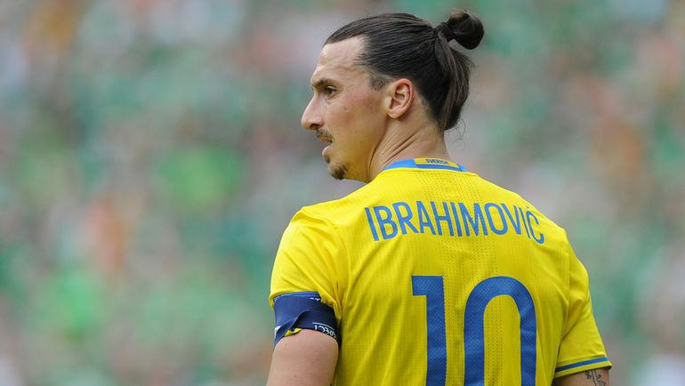
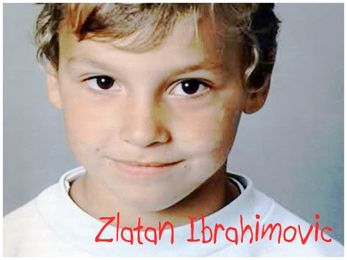
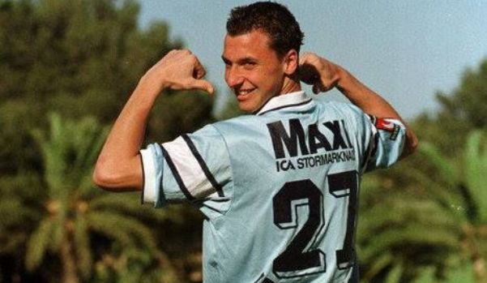
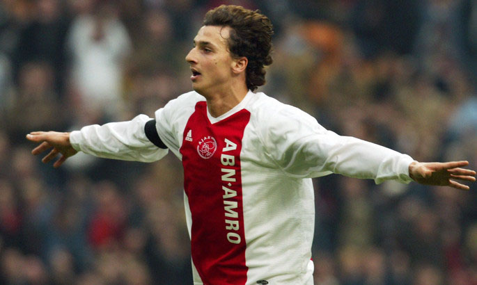
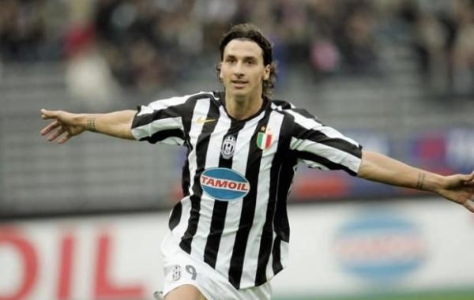
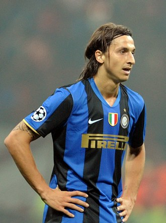
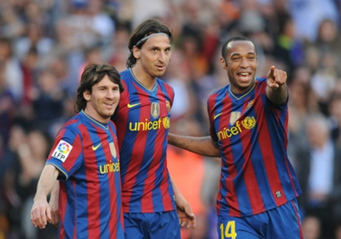
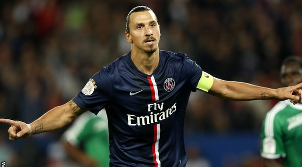
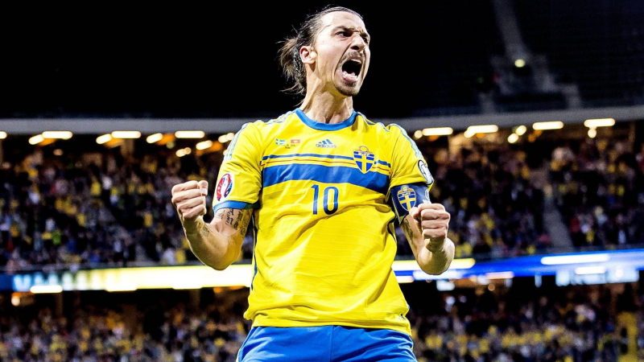
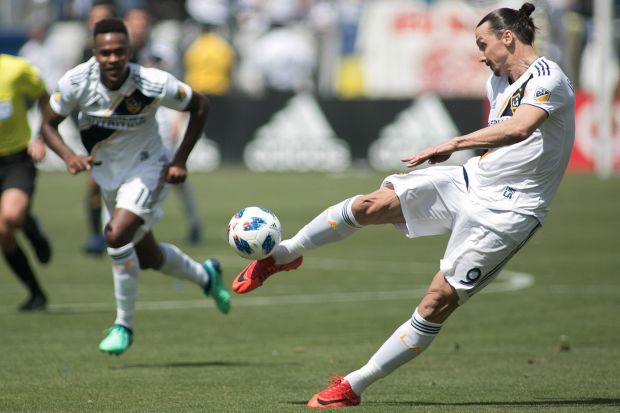

Златан Ибрагимович – непредсказуемый форвард на футбольной арене, прославившийся многочисленными голами и вспыльчивым характером. Также Златан считается одним из самых успешных спортсменов 21 века: в честь его имени даже появилось новое слово в шведском языке (которое, кстати, было принято на официальном уровне) – «златанера», что означает «доминировать».
В его послужном списке немало достижений. Он 11 раз становился футболистом года в Швеции, трижды – в Италии. А в 2013 году его удостоили премии ФИФА имени Ференца Пушкаша. Награда вручается игроку, забившему самый красивый гол года.
Есть тысячи способов преуспеть в этой жизни, и один из них может быть отличным от других, может быть немного странным. И этот самый способ может быть наилучшим. Ненавижу, когда выделяющихся людей приземляют. Если бы я не выделялся, я бы не сидел над этой книгой (своей биографией). Конечно, я не говорю: делай, как я! Пытайся быть Златаном! Нет. Я говорю о том, чтобы все шли своим путём, каким бы он ни был. Не должно быть никаких сборов подписей. Нельзя изолировать и оскорблять человека только потому, что он отличается от других.
Детство и юность
Начало страницыРодился великий спортсмен в 1981 году в городе Мальмё, Швеция. Родители мальчика были приверженцами разных религий: отец Шефик Ибрагимович исповедовал ислам, а мать Юрка Гравич – христианство. Златан смешанной национальности – боснийский хорват.
Из-за этих фактов в СМИ появлялась неправдоподобная информация о вероисповедании футболиста, однако сам Златан не относит себя ни к одной вере. Как признается форвард, у его родителей отношения не сложились: они развелись, когда будущей звезде футбола было 2 года, поэтому Ибрагимович жил с матерью, которая была строгой в воспитании сына и иногда за непослушание била его деревянными ложками. Златан частенько скучал по отцу, потому что с ним было весело.
Из-за этих фактов в СМИ появлялась неправдоподобная информация о вероисповедании футболиста, однако сам Златан не относит себя ни к одной вере. Как признается форвард, у его родителей отношения не сложились: они развелись, когда будущей звезде футбола было 2 года, поэтому Ибрагимович жил с матерью, которая была строгой в воспитании сына и иногда за непослушание била его деревянными ложками. Златан частенько скучал по отцу, потому что с ним было весело.
В Мальмё, где провел детство Златан, было настоящее гетто: улицы переполнялись переселенцами, поэтому драки, разборки или воровство были привычными явлениями. Златан и сам крал вещи из-за того, что у него когда-то «увели» велосипед. Причем это были не только всякие мелочи и сладости, но и те же велосипеды. Поэтому, как признается парень, если бы не футбол, вероятнее всего, он бы стал преступником и скитался по тюрьмам.
Самым любимым предметом в школе у форварда была математика, которая давалась Златану настолько легко, что он даже частенько не записывал за учителем: решение приходило путем логических размышлений и картинок в голове. Поэтому спортсмен сравнивает школьный предмет с футболом. Однако он вовсе не был похож на прилежного ученика: Ибрагимович был выгнан с урока итальянского, после чего он заявил, что выучит язык после того, как станет чемпионом.
Любовь к футболу у Ибракадабры (прозвище игрока) появилась еще в юности: когда мальчику было шесть лет, ему подарили пару футбольных бутс, а в 8 лет он играл в команде «Балкан», которая состояла из балканских переселенцев. Там и начали проявляться лидерские качества будущего форварда. Позже, в 12 лет, мальчик перебрался в команду «Мальмё», где прошли его лучшие детские годы: сначала 4 года играл в юношеском составе, а потом перешел в главный.
Помимо футбола, в детстве Златан увлекался боевыми искусствами – у него даже сохранился черный пояс по тхэквондо.У футболиста немало прозвищ – «Ибра», «Ибракадабра». А сам Златан не стесняется называть себя «живой легендой».
Футбол
Начало страницыИбрагимович поражал болельщиков блистательной игрой на футбольном поле, поэтому вскоре был замечен Арсеном Венгером, но отказался от предложения хозяина «Арсенала», зато с 2001 года стал сотрудничать с нидерландским футбольным клубом «Аякс». Здесь Ибра провел 3 года, но после 6 месяцев пребывания в амстердамском клубе был дисквалифицирован на 5 матчей за агрессивное поведение на поле – удар локтем в лицо соперника. Но именно в «Аяксе» Ибрагимович выиграл чемпионат, а в 2004 году Златан забил лучший гол года.
После успешного старта в «Аяксе» футболист перешел в итальянский клуб «Ювентус», который заплатил за игрока немалые деньги – €19 млн. Пока Ибракадабра, находясь в «Ювентусе», забивал мячи в ворота соперников, он был назван лучшим иностранным игроком в итальянском чемпионате, а также спортсмен был удостоен шведского звания лучшего футболиста года.
Однако в Турине карьера футболиста так и не пошла ввысь, например, в первом сезоне в 45 матчах ему удалось забить только 16 голов. Несмотря на то, что за Златана клуб «Реал» предлагал €70 млн, итальянцы дали Златану еще один шанс, однако игра в «Ювентусе» так и не стала успешной.
В 2006 году Златан перебрался в ФК «Интер» – за эту команду он болел в детстве. Новый футбольный клуб отдал за игрока намного меньше, чем предлагал «Реал» – €25 млн. В черно-голубой форме нового футбольного клуба Златан стал настоящей европейской звездой. За 3 года пребывания в «Интере» Ибра стал лучшим бомбардиром серии «А» и успел забить 66 голов, благодаря чему миланский «Интернационале» становился лидером Италии – за 2008-2009 годы было выиграно три чемпионата и два Суперкубка.
Однако Златан Ибрагимович давно приобрел репутацию спортсмена, не сидящего на месте, а постоянно двигающегося вперед: после миланской команды форвард пробует себя в испанской «Барселоне», которая предложила за форварда €46 млн. Швед дебютировал в матче за Суперкубок Испании, в котором запомнился фанатам результативным пасом на Месси. Но футболисту было сложно смириться с тем, что он являлся не основной атакующей силой испанского клуба.
В «Барселоне» Златан пробыл 1 год и успел себя показать как дерзкий игрок на футбольном поле, ему даже пришлось пропустить 10 матчей.
Уходу из «Барселоны» способствовал конфликт между спортсменом и его тренером Пепе Гвардиолой. Парень признается, что завистливый Пепе был его злейшим врагом. Однако ФК «Барселона» не жалеет о появлении в команде столь строптивого и сложного характером игрока: за время пребывания в клубе со Златаном были выиграны чемпионат Италии и два Суперкубка, из 41 матча Ибра успел забить 21 гол.
Во время пребывания в «Барселоне» Ибрагимович стал участником скандально-пикантной ситуации. Фотографы выложили в Сеть фото, где он и его коллега по команде Жерар Пике (муж певицы Шакиры) нежно обнимают друг друга у автомобиля. Футболистов тут же окрестили любовниками. Но на вопросы журналистов с ответами он не церемонился и выражений не выбирал, так что вскоре разговоры о его нетрадиционной ориентации сошли на нет.
В 2010 году Ибрагимович становится игроком ФК «Милан», который из-за его блистательной игры выкупил контракт с футболистом у «Барселоны». Итальянцы нуждались в сильном нападающем, и Златан сделал свое дело, выиграв чемпионат и Суперкубок.
Однако у «Милана» были финансовые трудности, если «Интернационале» боролся за форварда, то этот клуб сразу же принял предложение «ПСЖ».
Да и сам Ибрагимович не любит «засиживаться» долго в одной команде, поэтому с радостью вошел в сборную французского клуба. В парижской сборной карьера 31-летнего Златана пошла ввысь: он побил собственный рекорд, забив 30 голов в первом сезоне, а также заслужил звание лучшего бомбардира Франции. Некоторые футбольные фанаты считают, что Ибра добился высот не только из-за стремления к победе, но и благодаря физическим качествам: у парня ростом 195 сми весом 95 кг невероятная гибкость
Златан Ибрагимович – игрок с дерзким характером на футбольной арене, однако это не мешает молодому человеку обладать высокими личностными качествами. Форвард является филантропом и участвует в благотворительных акциях. В 2015 году на матче Златан снял майку, и на теле знаменитого нападающего, помимо известных всем тату, окружающие увидели 50 надписей с именами голодающих детей. Так Ибрагимович привлек внимание общественности к глобальной проблеме.
Помимо футбола, Ибра занимается собственными бизнес-проектами, и, по его словам, они ему приносят такое же удовольствие, как и спорт. Причем спортсмену не нужен дополнительный заработок, он с легкостью может купить гостиницу, в которой живет, и несколько домов в округе. Но когда его стартапы (например, линия духов и одежды) реализуются, Златан испытывает истинное счастье. Также он подписал контракт с «Nike» и регулярно появляется на обложках мужских журналов.
В 2016 году Златан Ибрагимович официально заявил, что он покидает футбольный клуб «ПСЖ».Тогда же в своем «Инстаграме» футболист сообщил о переходе в английский «Манчестер Юнайтед». Он с успехом начал карьеру в новом клубе. Но в апреле 2017 во время игры неудачно приземлился на колено, доиграть матч ему не удалось. А позже стало известно, что у Ибрагимовича серьезное повреждение связок колена, и эта травма выбила футболиста из колеи до конца сезона.
В СМИ все чаще стали говорить о том, что Златан вообще не выйдет больше на поле, якобы на этом он закончит карьеру футболиста. Но все слухи опроверг сам Ибра, в «Инстаграме» он написал, что сдаваться не собирается и вернется даже сильнее, чем прежде. В мае в Америке ему сделали операцию.
В августе он продлил контракт в «Манчестер Юнайтед» еще на 1 год, а уже в ноябре вышел на поле после долгой послеоперационной реабилитации. Но, к сожалению поклонников клуба, ни Премьер-лигу, ни Лигу чемпионов с «красными дьяволами» он так и не выиграл.
Разумеется, такого талантливого игрока не могли не пригласить в национальную сборную Швеции. Его дебют состоялся в 2001 году, ему на тот момент было 19 лет. Он сыграл на четырех чемпионатах Европы и на двух чемпионатах мира, стал лучшим бомбардиром в истории сборной Швеции – Ибрагимович забил 62 гола. О завершении карьеры в сборной он объявил в июне 2016 года.
Златан Ибрагимович сейчас
Начало страницы22 марта 2018 года официальный сайт «Манчестер Юнайтед» сообщил о расторжении контракта со шведским нападающим Златаном Ибрагимовичем. Вероятно, причиной такого решения стало длительное отсутствие игрока, это привело к тому, что летом 2017 года клуб подписал контракт с Ромелу Лукаку из «Эвертона». В итоге Ибрагимович стал свободным агентом. Он сразу же получил предложение от нескольких клубов из Китая и США.
Вскоре футболист объявил, что теперь он будет играть за американский футбольный клуб «Лос-Анджелес Гэлакси». Но интересен тот факт, что зарплата форварда в новой команде составила $1,5 млн в год. А это в 18 раз меньше, чем ему платили в Англии ($27 млн в год).
Награды
- 2002, 2004 – Чемпион Нидерландов (в составе «Аякса»)
- 2007, 2008, 2009 – Чемпион Италии (в составе «Интернационале»)
- 2009 – Обладатель Суперкубка УЕФА (в составе «Барселоны»)
- 2009 –Победитель Клубного чемпионата мира (в составе «Барселоны»)
- 2010 – Чемпион Испании (в составе «Барселоны»)
- 2011 – Чемпион Италии (в составе «Милана»)
- 2013, 2014, 2015, 2016 – Чемпион Франции (в составе «Пари Сен-Жермен»)
- 2017 – Победитель Лиги Европы УЕФА (в составе «Манчестер Юнайтед»)